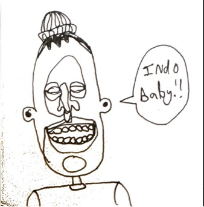

August 9th, 2026
Waddupppppp Henry Mane!!
Coming to you live and direct from my childhood room in Hillsborough, NC. I just finished editing an interview I filmed a few days ago with my sister. I am hoping to make a series of it. So… when you make your return to the states, I would love to have you be a part of it. I will ask you revealing questions and gut-wrenching would-you-rathers. through this your true character will be revealed.
I know you're having a time out in Asia. I cannot lie, I am super jealous- the whole thing seems so so sick. I am glad you received that grant to make the excursion possible because you totally deserved it. This is going to be a LEGENDARY EPOCH FOR YOU BROTHER!

I miss you maboy. It was so awesome getting to chill with you a little bit last summer. You are the freaking man, and hanging out with you is simply good for the soul. I always love hearing tales of your elaborate practical jokes and high school mischief. Not to mention… you are undoubtedly my biggest music put-on. You got such a great ear for locating the good stuff.
I am going out to Vancouver, Washington in a few weeks to start a 10-month term doing food assistance work through AmeriCorps. There's loads of great shows going down in Portland (Henry genesis land), which I'm quite stoked about. I gotta ask Asa Gart for some portland recs. Dude, I just remembered how you would casually go to Decemberists shows as a kid. Surely that can be credited to inspiring some of your musical prowess. Anyways, the AmeriCorps term ends next July- Soooooo I will be free in the summer, which naturally means we gots to run a lil excursion somewhere out in the wilderness. Feel like it would be really fun to do something out in the desert.
Time to wrap this little number up. I admire the hell out of you man. You got so much creativity, talent, and passion for the things you're interested in. I always leave you feeling more inspired about my own pursuits. You are such a fucking boss for going rogue nomad style for a full year to explore the globe while learning and teaching about something you love. Stay safe out there and take lots of footy!!
Can't wait to hear about everything for the next time I see you. Love you brother.
Sincerely,
Rory
Also, Alyssa is the goat. Totally makes sense y'all are [editor's note: were] together.